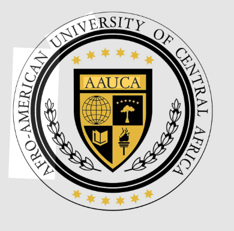

Una iniciativa de liderazgo estudiantil autogestionada para estudiantes de la Universidad Afro-Americana de África Central. Reduciendo barreras y construyendo futuros mediante solidaridad, transparencia y liderazgo juvenil.

Reduciendo barreras de aprendizaje en Guinea Ecuatorial.
Fondos auditados públicamente
Organizado por compañeros
Somos un movimiento fundado e impulsado por estudiantes activos de la AAUCA que decidieron unirse para garantizar que ningún compañero talentoso deba abandonar sus estudios por falta de recursos económicos.
Promover la igualdad de oportunidades académicas en la Universidad Afro-Americana de África Central (AAUCA) mediante el diseño, captación y administración autónoma y transparente de un fondo de becas enfocado en la vulnerabilidad socioeconómica.
Consolidarse como un modelo de solidaridad estudiantil altamente estructurado, autogestionado y replicable en el ámbito universitario de Guinea Ecuatorial y la subregión de África Central, logrando un impacto de deserción cero.
Coordinador General
Logística y Finanzas
Logística y Eventos
Comunicación y Relaciones
Ofrecemos diferentes niveles de soporte adaptados a las necesidades particulares de cada estudiante vulnerable diagnosticado por el comité evaluador.
Para postular al programa, debes cumplir rigurosamente con los 7 requisitos generales de admisión acordados por el comité. Marca los que ya tengas listos para validar tu preparación:
Iniciar Solicitud DigitalHaber completado y poseer el resguardo de matrícula vigente en la AAUCA.
Copia del Documento de Identidad Personal (DIP) o Pasaporte del solicitante.
Nómina salarial del tutor legal, declaración jurada de ingresos o certificado social.
Firmada y sellada por un docente o tutor académico activo de tu facultad en la AAUCA.
Carta detallada exponiendo las causas de la solicitud y tu compromiso con la comunidad.
Certificado oficial de calificaciones académicas o libreta académica del periodo previo.
Compromiso formal a cumplir las normas, estatutos y obligaciones del programa de becas.
Explora de forma interactiva las imágenes de nuestras sesiones informativas, reuniones de comité, asambleas estudiantiles y materiales promocionales en el campus de la AAUCA.
Completa las seis secciones del formulario del programa de becas GEVISIÓN de manera digital para iniciar el proceso evaluatorio del comité.
En GEVISIÓN aplicamos una política de tolerancia cero al oscurantismo. Puedes consultar y monitorear cada franco CFA gastado e ingresado, garantizando que el financiamiento sea administrado bajo rigurosas pautas académicas.
A través de tus donaciones directas puedes actuar de mecenas de un estudiante completo. Los fondos van directamente asignados a la cobertura de matrículas y material tecnológico de alumnos evaluados.
Transferencia Local Móvil
Monedero Móvil Directo